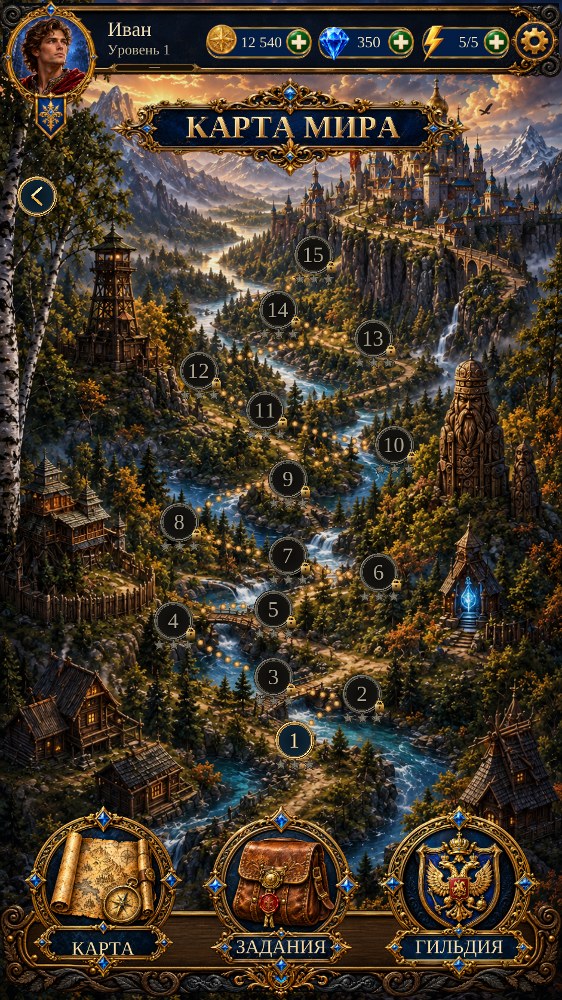

Карта мира — World Map R1 review
Карта мира · World Map R1
Actual Unity implementation with a new clean landscape, separate gold-and-sapphire controls, live chapter states and the accepted Home HUD.
Fresh-save captures show Chapter 1 available. Chapters 2–15 remain locked because their level content is not authored yet. The original reference depicts a completed-state design.
Actual Unity Play Mode capture